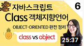

Youtube
#Coding
#Coders
#Steve
Clone Coding: Youtube Mobile Website 유튜브 모바일 웹사이트 따라 만들기 | 프론트엔드 개발자 입문편: HTML, CSS, JavaScript
1M views 1 month ago
1K
0
Share
Save
Report
클론코딩 by 혁진
1M subscribers
subscribe
Up next

자바스크립트 6. 클래스와 오브젝트의 차이점 | 객체지향 언어 클래스 정리
클론코딩 by 혁진
82K views
HTML semantic태그 완벽정리 | 웹 포트폴리오 만들기 전에 꼭 보세요
클론코딩 by 혁진
28K views
자바스크립트 2. 콘솔에 출력, script async 와 defer의 차이점 및 앞으로 자바스크립트 공부 방향
클론코딩 by 혁진
72K views